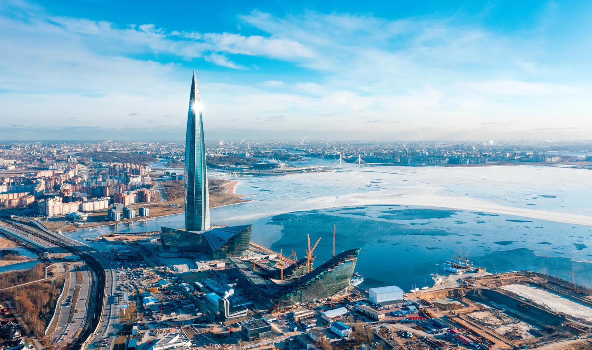
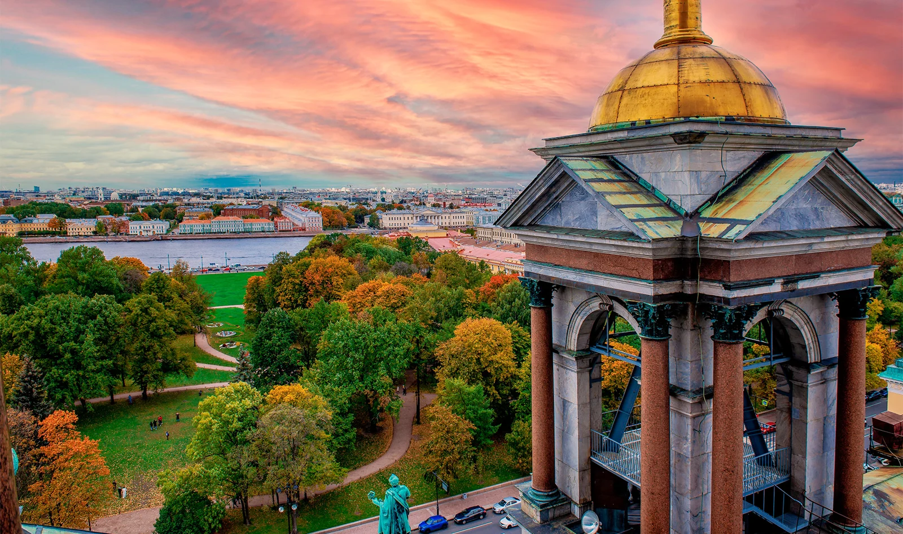
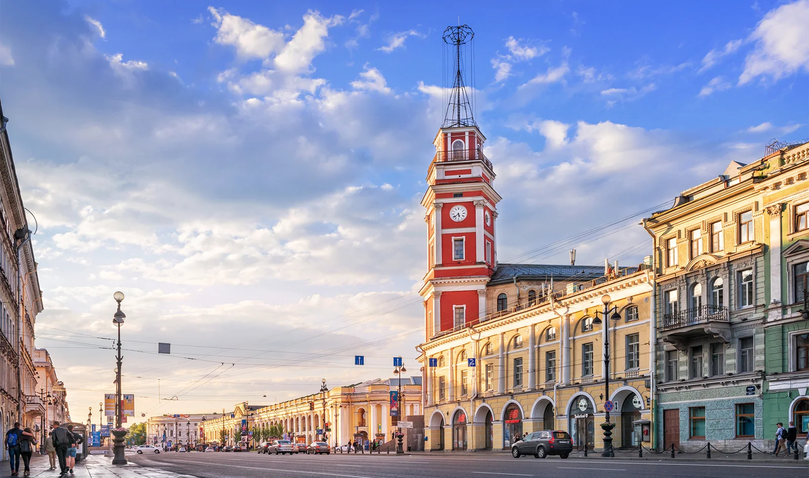
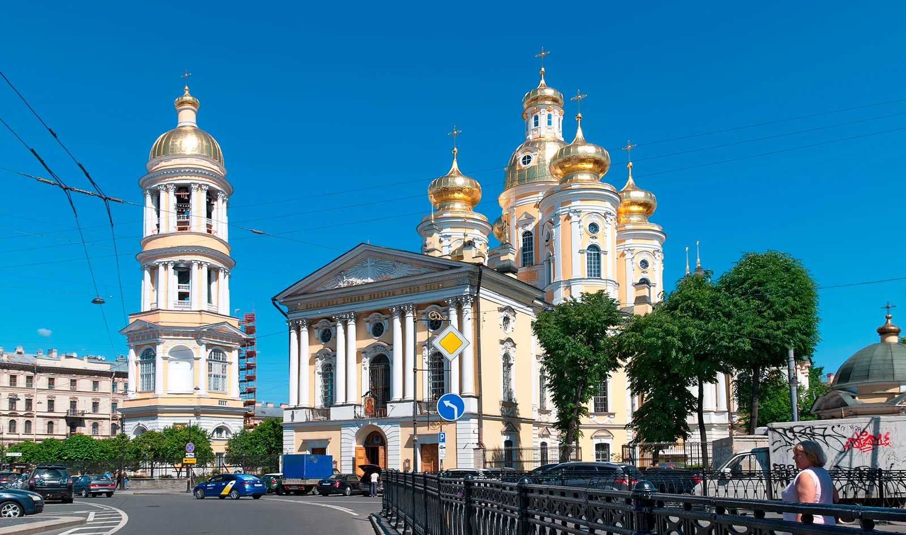

Сверху видно всё: 11 смотровых площадок Петербурга
Автор: Мария Назарова
Подборка точек, откуда можно увидеть город сверху. Разные виды смотровых площадок позволяют подобрать панорамный маршрут под интересы и формат поездки.
Читать полную статью на блоге Островка →



Фото: Michaelvbg / Shutterstock.comИсточник изображения


Фото: Julia Moiseenko / Shutterstock.comИсточник изображения


Фото: Baturina Yuliya / Shutterstock.comИсточник изображения


Фото: Telia / Shutterstock.comИсточник изображения

Фото: Ultraskrip / Shutterstock.comИсточник изображения